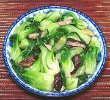

|
Green Bok Choy with MushroomsChina - Zhejiang - Xiang Gu Xiao Bai Cai | ||||
| Serves: Effort: Sched: DoAhead: |
4 side ** 30 min Prep |
A nice, simple, easy to make stir fry with good flavor - a fine side dish for Asian or Western menus. This cooking method can also be used with Yu Choy, which has similarly tender stems, but it needs to be cut differently. | |||
|
12 7 3 1/2 ------- 1/2 1 1/3 1/4 ------- 6 1/2 1/2 2 |
oz cl in --- t T t t --- c t t T |
Green Bok Choy (1) Shiitake, fresh (2) Garlic Ginger root -- Glaze Potato Starch Water Salt Sugar ------------ Water Salt Oil Oil |
Prep - (20 min)
|